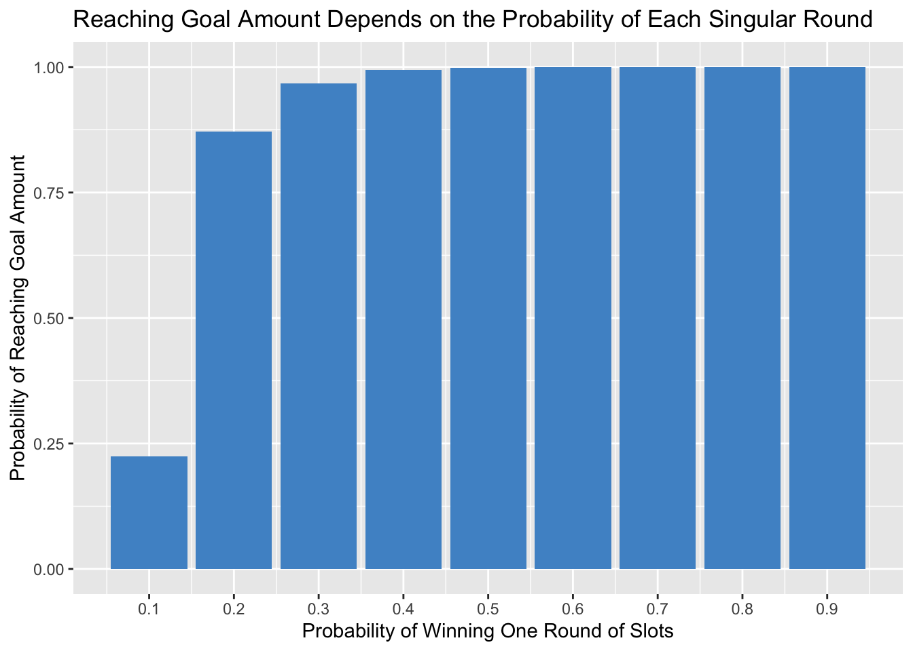
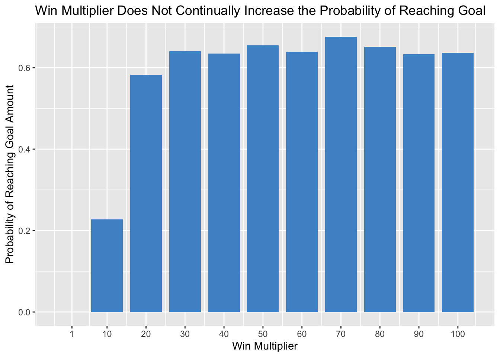
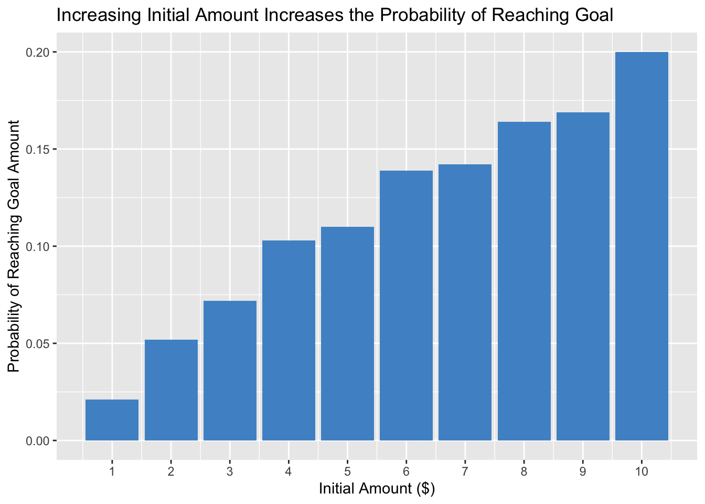

library(purrr)
library(ggplot2)
gamble <- function(initial_amount, goal_amount, p_win, win_multiplier) {
money <- initial_amount
while(money > 0 & money < goal_amount) {
money <- money + ifelse(runif(1) <= p_win, win_multiplier, -1)
}
# True means that the gambler met their goal amount. False means the gambler went bankrupt.
return(outcome = ifelse(money <= 0, FALSE, TRUE))
}Slots Simulations
Slot machine simulation
The American Gaming Association recently reported that US casinos generated a record-breaking $49.78 billion dollars in 2024, a 0.8% increase over 2023 and the fourth-straight record-breaking year. Of this total, slot machines accounted for $36.06 billion.
To better understand slot machine win probabilities, I sought to create a function in R that simulates the probability that an individual would either reach their goal revenue or go bankrupt at a slot machine. The function takes an initial amount of money, a goal amount of money, a win probability, and a win multiplier value. To determine whether the individual will reach their goal amount, the function generates a random uniform number between 0 and 1. If that number is less than or equal to the win probability, the individual will gain revenue from that round, equal to the win multiplier amount. If the random uniform number is greater than the win probability, then they will lose $1. Then, the next round is played by generating another random uniform number. This cycle continues until either 1) the player reaches or exceeds their goal amount or 2) the player goes bankrupt.
Some assumptions engrained into this function are that 1) win probability does not change and 2) each win generates the same amount of revenue. Using map(), the function runs 1,000 times, calculating a win probability representing the fraction of times the player will meet their goal amount out of 1,000 slot machine sessions.
gamble_simulation <- function(n_runs = 1000, initial_amount, goal_amount, p_win,
win_multiplier) {
win_prob <- map_lgl(1:n_runs, ~gamble(initial_amount, goal_amount, p_win,
win_multiplier)) |>
mean()
return(data.frame(goal_prob = win_prob))
}I first wanted to investigate how changing the win probability impacts the player’s chances of meeting their goal amount. I set the simulation to give the player an initial amount of $10 and a goal amount of $100. I set the win multiplier to 10, meaning that for every slot session that is won, the player will gain $10.
changing_p_win <- function(n_runs = 1000, initial_amount = 10, goal_amount = 100, p_win,
win_multiplier = 10) {
win_probs <- map_dbl(p_win_values, function(p_win) {
outcome <- map_lgl(1:n_runs, ~gamble(initial_amount, goal_amount, p_win, win_multiplier))
mean(outcome)
})
return(data.frame(p_win = p_win_values, goal_prob = win_probs))
}The probability of reaching the goal amount was calculated for different win probabilities ranging from 0.1 to 0.9. Below are the results.
p_win_values <- seq(0.1, 0.9, by = 0.1)
set.seed(47)
p_win_variance <- changing_p_win(p_win = p_win_values)
p_win_variance p_win goal_prob
1 0.1 0.224
2 0.2 0.871
3 0.3 0.967
4 0.4 0.995
5 0.5 0.999
6 0.6 1.000
7 0.7 1.000
8 0.8 1.000
9 0.9 1.000ggplot(p_win_variance, aes(x = p_win, y = goal_prob)) +
geom_col(fill = "steelblue3") +
scale_x_continuous(breaks = seq(0.1, 0.9, by = 0.1)) +
labs(
x = "Probability of Winning One Round of Slots",
y = "Probability of Reaching Goal Amount",
title = "Reaching Goal Amount Depends on the Probability of Each Singular Round"
)
As expected, a greater win probability leads to a greater probability of reaching the goal amount. At win probabilities of 0.4 or greater, the player is almost guaranteed to reach their goal amount.
However, in reality, slot machine probabilities are much worse than even the 0.1 win probability tested above. One estimate is that win probabilities fall within a range of 1 in 5,000 to 1 in 34,000,000. To get a more accurate probability, I ran my simulation with a win probability of 1 in 5,000.
set.seed(47)
gamble_simulation(initial_amount = 10, goal_amount = 100, p_win = 0.002, win_multiplier = 10) goal_prob
1 0Decreasing the win probability to 1 in 5,000 changed the probability of reaching the goal value of $100 to 0, indicating it is extremely unlikely for the player to reach their goal in this scenario with this win probability.
I was also curious as to how changing the win multiplier would change the probability of reaching the goal value. Because I wanted to be able to view trends in the data, I decided to set the win probability to 0.1 so that the player would have a visible chance at reaching their goal value. Again, I set the initial amount to $10 and the final amount to $100, running the simulation with different win multipliers ranging from 1 (the player wins $1 if they win the round) to 100 (the player wins $100 if they win the round).
changing_win_multiplier <- function(n_runs = 1000, initial_amount = 10, goal_amount = 100,
p_win = 0.1, win_multiplier) {
win_probs <- map_dbl(win_multipliers, function(win_multiplier) {
outcome <- map_lgl(1:n_runs, ~gamble(initial_amount, goal_amount, p_win, win_multiplier))
mean(outcome)
})
return(data.frame(win_multiplier = win_multipliers, goal_prob = win_probs))
}win_multipliers <- c(1, seq(10, 100, 10))
set.seed(47)
win_multiplier_variance <- changing_win_multiplier(win_multiplier = win_multipliers)
win_multiplier_variance win_multiplier goal_prob
1 1 0.000
2 10 0.227
3 20 0.583
4 30 0.640
5 40 0.635
6 50 0.655
7 60 0.639
8 70 0.676
9 80 0.651
10 90 0.633
11 100 0.637ggplot(win_multiplier_variance, aes(x = win_multiplier, y = goal_prob)) +
geom_col(fill = "steelblue3") +
scale_x_continuous(breaks = c(1, seq(10, 100, 10))) +
labs(
x = "Win Multiplier",
y = "Probability of Reaching Goal Amount",
title = "Win Multiplier Does Not Continually Increase the Probability of Reaching Goal"
)
While changing the win multiplier from 1 to 10 and 10 to 20 greatly increased the probability of reaching the goal amount, these same effects were not observed with further increases of the win multiplier. This indicates that once the win multiplier reaches a certain number, it no longer increases the probability of achieving the goal amount. In other words, at a certain point, adding more money to the “jackpot” will not help players reach their goals.
Lastly, I wanted to see how changing the initial amount of money impacted the probability of reaching the goal amount. For this simulation, I set the goal amount to $100, the win probability to 0.1, and the win multiplier to 10 and tested initial amounts ranging from $1 to $10.
changing_initial_amount <- function(n_runs = 1000, initial_amount, goal_amount = 100,
p_win = 0.1, win_multiplier = 10) {
win_probs <- map_dbl(initial_amounts, function(initial_amount) {
outcome <- map_lgl(1:n_runs, ~gamble(initial_amount, goal_amount, p_win, win_multiplier))
mean(outcome)
})
return(data.frame(initial_amount = initial_amounts, goal_prob = win_probs))
}initial_amounts <- seq(1, 10, 1)
set.seed(47)
initial_amount_variance <- changing_initial_amount(initial_amount = initial_amounts)
initial_amount_variance initial_amount goal_prob
1 1 0.021
2 2 0.052
3 3 0.072
4 4 0.103
5 5 0.110
6 6 0.139
7 7 0.142
8 8 0.164
9 9 0.169
10 10 0.200ggplot(initial_amount_variance, aes(x = initial_amount, y = goal_prob)) +
geom_col(fill = "steelblue3") +
scale_x_continuous(breaks = seq(1, 10, 1)) +
labs(
x = "Initial Amount ($)",
y = "Probability of Reaching Goal Amount",
title = "Increasing Initial Amount Increases the Probability of Reaching Goal"
)
The data shows that increasing the initial amount of money for use at the slot machine increases the probability that a player will reach their goal amount. Thus, players that spend more are more likely to win because spending more money creates more opportunities to fall below the win probability and cash in on a win. This is part of why gambling and slots are so addictive-players believe that if they just try one more time and spend a little more, then in the next round they will hit the jackpot.